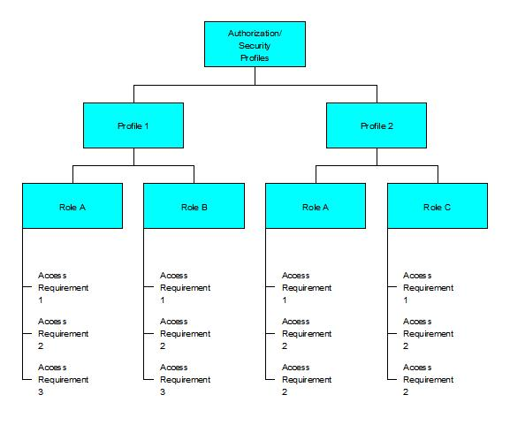
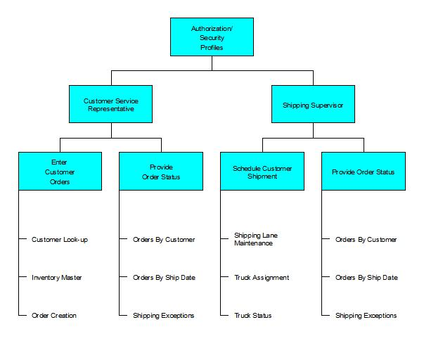

| Guideline: Security Profiles |
 |
|
IntroductionThis technique paper supplements BUS 300 - Information Asset Profile and identifies how the security functions and features of the system will be implemented in the organization. The purpose of this technique is:
Example  Steps/Development ApproachReview Roles1. Review ProcessesA table of processes and all the information requirements needs to be developed. This will help to clarify who will be performing various functions in the new organization structure and which access requirements would be appropriate to maintain quality control. Some data can be for information (I) and some will need updating (U). If the new organization structure is intended to have fewer controls and give the employees more responsibility, then it is likely that there will be fewer functions, which do not allow update capabilities. ACCESS REQUIREMENTS TABLE
|
| Process | Function | Access Requirements | Role | Department/Group |
|---|---|---|---|---|
| Accounts Payable | Add supplier | Supplier data (U) | Finance manager | Finance department |
| Check invoices |
Order data (I) Supplier data (I) Invoice data (U) |
Invoices clerk | Finance department | |
| Make payment |
Supplier data (I) Invoice data (U) Payment data (U) |
Invoices clerk | Finance department | |
| Query invoices |
Order data (U) Supplier data (U) Invoice data (U) Payment data (U) |
Finance manager | Finance department | |
| Delay payment |
Order data (U) Supplier data (U) Invoice data (U) Payment data (U) |
Finance director | Finance department |
This may map onto the current roles of the individuals or, in some cases, give more (or less) responsibility.
This needs to be thought through when defining these roles.
Review Security in Package
The security features in the package need to be reviewed with respect to the requirements. The software supplier should be able to provide guidance on an appropriate configuration.
Align Package Features to Role
1. Define security strategy
This activity determines an approach to security issues, which reflects the new organizational and behavioral requirements. The following should be considered in developing this strategy:
-
What is the best practice use of security features by other companies that have a similar organizational structure
to that being developed?
-
How flat is the new organization structure? How many controls will be sufficient?
-
How can the system support the new reporting lines if controls are limited?
-
Will people be given more responsibility? Do the stakeholders agree that this is desirable?
- Will the security encourage the types of behaviors expected in the new organization?
2. Determine features for each role
By using the following table, the security features that will be used for each function are determined.
ACCESS REQUIREMENTS TABLE
| Process | Function | Access Requirements | Role | Security Features |
|---|---|---|---|---|
| Accounts Payable | Add supplier | Supplier data (U) | Finance manager | TO BE COMPLETED |
| Check invoices |
Order data (I) Supplier data (I) Invoice data (U) |
Invoices clerk | TO BE COMPLETED | |
| Make payment |
Supplier data (I) Invoice data (U) Payment data (U) |
Invoices clerk | TO BE COMPLETED | |
| Query invoices |
Order data (U) Supplier data (U) Invoice data (U) Payment data (U) |
Finance manager | TO BE COMPLETED | |
| Delay payment |
Order data (U) Supplier data (U) Invoice data (U) Payment data (U) |
Finance director | TO BE COMPLETED |
Group Roles into Profiles
1. Review access requirements for each role
Using the access requirements table, the roles need to be analyzed to see if there is any overlap. For example the purchasing manager may have the same access requirements as the finance clerks for some financial information.
2. Define profiles
Profiles are defined and a chart of authorization/security profiles is developed.
See Security.PRE as shown above.
Assign Profiles to Jobs
1. Review organization chart
Security profiles are assigned to individuals and groups on the organization chart. People may be disappointed or excited about any changes in job description, which may result from the security profiling exercise. It is important to highlight the areas of the organization chart that are likely to cause problems so that the Stakeholders can be effectively managed.
Validation and Verification
Test the profiles on a wide variety of job titles. If the profiles have been designed well, the number of profiles should not grow, while preserving the integrity of the security design.
| © Copyright IBM Corp. 1987, 2012 All Rights Reserved Property of IBM These materials are intended only for use as part of an IBM engagement |